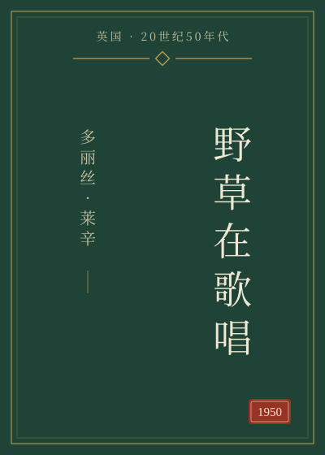
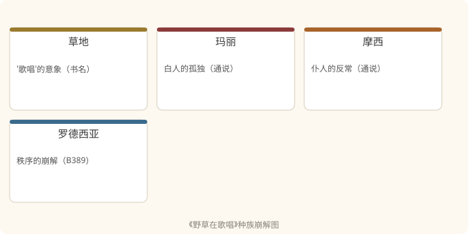

野草在歌唱
一、基本信息
| 作者 | 多丽丝·莱辛 |
|---|---|
| 成书/出版 | 1950年（Britannica B389：The Grass Is Singing (1950)——'about a white farmer, his wife, and their African servant in Rhodesia'） Doris Lessing — Encyclopaedia Britannica（百科全书） |
| 国别/地区 | 英国 |
| 时代 | 近代 · 20世纪50年代 |
| 体裁 | 长篇小说 |
| 语言 | 英语 |

《野草在歌唱》种族崩解图（主题·结构图）
二、创作背景
Britannica（B389）：The Grass Is Singing——'about a white farmer, his wife, and their African servant in Rhodesia'（罗德西亚的白人农夫、妻子与非洲仆人）。
Britannica（B389）：莱辛——2007诺奖；'people involved in the social and political upheavals of the 20th century'。
题材（通说待核）：玛丽·特纳的孤独与被杀——种族秩序的崩解。
三、内容脉络
（通说待核）玛丽的孤独与摩西的'反常'关系。
（通说待核）'草地歌唱'：开篇的凶案回声（通说待核）。
四、主要人物表
| 人物 | 身份 | 说明 |
|---|---|---|
| 玛丽·特纳 | 农场主妻 | （通说待核） |
| 摩西 | 非洲仆人 | （B389：their African servant） |
五、主题与艺术特点
- 罗德西亚的种族秩序（B389：Rhodesia）。
- '社会政治动荡中人'（B389：social and political upheavals）。
- '草地歌唱'的意象（书名语境——通说待核）。
六、影响与评论
- Britannica：'about a white farmer, his wife, and their African servant in Rhodesia'（B389）。
Doris Lessing — Encyclopaedia Britannica（百科全书） - Britannica：2007诺奖（B389 交叉）。
Doris Lessing — Encyclopaedia Britannica（百科全书）
七、阅读建议
难点
- 南罗德西亚殖民语境。
- '凶案'的开篇倒叙。
- 《野草在歌唱》中译本（人民文学等——通说待核）。
- 英文原版。
莱辛首作；先于《金色笔记》。
八、待核实
- 玛丽/摩西人名核对（通说）。
- 1950年出版细节待核。
- '草地歌唱'意象待核。